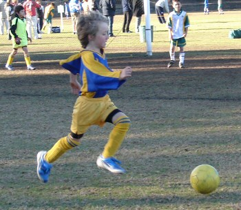
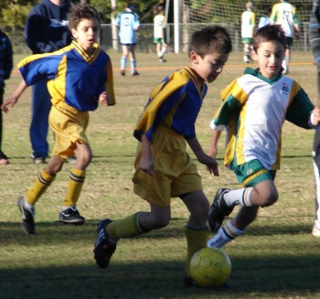
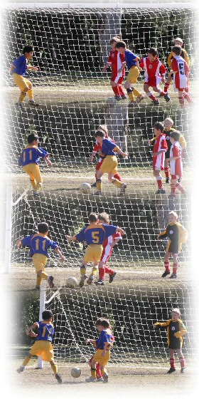
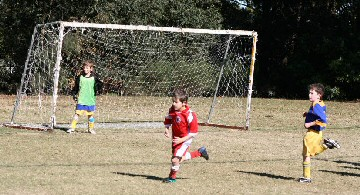
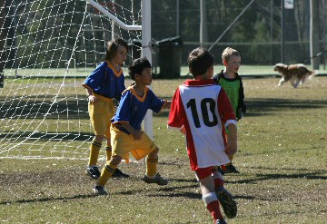
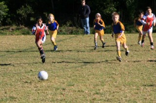
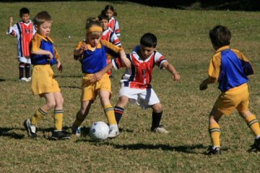
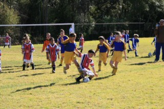
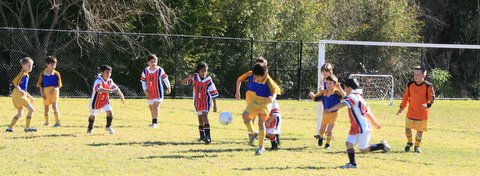
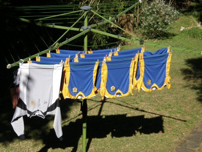

| Match Report - 02 August 2008 |
|
|
|
|
|
|
|
| U6 - White A |
North Ryde White Knights 1 - All Saints Hunters Hill 0

|
|
|
|
Good control of the ball up front saw Riley score within the first few
minutes. Riley took the ball well up the field many times, breaking through
the defence with persistent dribbling. He was unlucky not to score more than
once.
Dimitri took the field reluctantly due to the cold, but was able to block
the opposition several times. His persistence and defence earned him the
player of the week award. Spyridon bravely took the field even though a knee
injury had reduced his speed to a hobble, and he was able to provide some
good defence and kick-ins closer to our goal.
William got right involved in the defence and attack sides of the game,
playing mostly in the mid-field and clearing the ball for his team. Ben was
active in defence, making one save with a last minute tackle right in front
of the goal, and just missing out on scoring a goal himself.
It was a good game, hard fought by both sides. Each team is still learning
to keep their hands to themselves, with a bit of shoving and holding going
on, but this was because both sides were keen to score, with no harm intended.
- Virginia Lau
|
|
|
| U7 - Green |
|
North Ryde Koalas - Macquarie Dragons B
|
|
|
|
Fatigue has finally set in. Well that's our excuse and we're sticking to
it! It's been a long season and our guys were outplayed by a very committed
opponent last weekend. As usual, they never gave up and were chasing as hard
at the end of the game as they were from the start.
Rather than harp on the negatives and what went wrong I thought I might take
this opportunity to write about all of our players individually and their
season.
Jarvis - a better competitor you will never meet.
Jarvis has been week in, week out one of our most consistent players. If
he's not scoring a mountain of goals he's saving them at the other end of
the field. Bigger and better things lie ahead.
Charlie - in a word, brilliant! He scored SIX
goals in one game and plenty more throughout the season. His combination
with Jarvis with the long kicks has been a highlight all season. Charlie
is very speedy and skillful with the ball at his feet. (I guess it helps
when your dad is the boss of Sportskickstart!)
James - our biggest improver! If we drew a line
at the start of the year and measured it at the end in terms of development
and application, James would be a clear winner. James has been quite
outstanding for the last three or four games... it's almost a shame the
season is drawing to an end.
Lioda - our petal amongst the thorns. It would
have been easy for Lioda to just sit back and let the boys get involved in
the tough stuff each week but Lioda more than matched her opponents quite
regularly. We're very hopeful to have Lioda running around again with us
in the U8's next season.
Jaiden - or should I call him Ronaldo! There's not
a lot of him but he can certainly play. Jaiden was our little magician who
had a new trick for us every week. The good thing was he knew when to produce
it. Apart from his skill, he's a tough little bugger too... plenty of knocks
but always got back out there.
Jack - my encouragement award winner (if we had
such an award that is). Whilst every team has their one or two 'stars', Jack
doesn't pretend to be one of those, but what he gave us, or what I saw was
someone who was really determined to win the ball at times and when coming
away empty handed was a little deflated. I am convinced that Jack can and
will be one of those future 'stars' and would love to see him back next year
(right Lisa?).
Daniel - (this is an unbiased view). What a
champion of the future... where are the talent scouts? (sorry, that's
the father talking out of the way). From the little bloke I saw running
around in the U6's last year to what he's been able to do this year in
particular the enjoyment he's got from playing with this team, he's made
me very proud.
One more to go!
- Paul Bonaventura
|
|
|
|
|
|

The Blues found themselves in the far-flung outskirts of the Sydney
metropolis as they faced the Hills Hawks on a fresh and early Saturday
morning in Galston. The chilly weather did little to dampen their
spirits though and they applied themselves to their task as soon as
the whistle blew, tearing into their opposition with trademark speed
and passion.
The Hawks were on the back foot from the word go as the Blues went on a
hungry and relentless hunt of the opposition goal line, turning in several
shots at goal that either just missed or were well saved by the keeper.
But the sustained pressure eventually took its toll on the Hawks defence
and a charged Blues attack finally ended with a terrific goal off Eli's
boot into the back of the net.
In a game that saw every Blues player giving it their maximum and working
superbly as a team, it isn't quite fair to single out any one player for
special mention. But it is also hard to ignore the three goals that came
off Adam's boot today that were nothing short of phenomenal. All three came
from exceptional corner kicks, none of which touched a Blues player before
going into the nets. The first one came late in the first half, and from
my vantage point as referee on the field I could tell that it was going
to be interesting. The ball flew with a terrific trajectory to twice the
height of the goals, imparted with enough right-to-left spin to guide it
into the goalmouth, skirt the crossbar, nick the far right post and drop
behind the goal line before the goalkeeper had a chance to gather it up.

There was a rather deafening silence that followed this goal as everyone
tried to work out what had happened, including the Hawks coach who had been
annoyingly vociferous until then. All except Adam, that is, who was already
scampering back to his half to restart the game. But that isn't where it
ended. He went on to do the exact same thing on two more occasions after
the break to effectively take all the stuffing out of the Hawks resolve
and completely mute the enthusiasm of the entourage of Hawks fans on the
sideline. Magic.

The Blues weren't done yet, of course, and as long as there were minutes
left on the clock they were going continue their game with the same pace
and fury until the ref told them to stop. The pattern became familiar;
rock-solid defence and nifty footwork began each movement, slick passing
and dribbling in the midfield accompanied by some fluid runs down the
sideline, and more often than not ending with an opportunity on goal.
The Blues final goal was scored in much the same way as the first, with
Eli once again adding the finishing touch to close the Blues account for
the day at five well-deserved goals to nil.
The talking point after the match was all about the extent to which the
Blues, in their own time and on their own terms, have learnt to read the
game and anticipate the type of game play they need to assemble to get
the show on the road. Their passing is more frequent and accurate now,
and they are able to move the ball very quickly across the park. Their
positioning without the ball is on song and there always seems to be a
blue and gold strip in the right place and at the right time. And the
defence speaks for itself. At one point the Hawks broke through a gap
and had 4 or 5 players storming with the ball towards the goals, only
to be overtaken a few seconds later by a swarm of blue shirts bent on
protecting their goals as though their lives depended on it.
It was a real treat to watch the Blues in action today, and share in the
passion with which they play their game.
Well done Blues
- Mark Howard
|
|
|
|
|
|

Well, after our training was washed out during the week, the weather came
good for us and we were able to get a game in this weekend at Kenthurst.
We started with the wind firmly in our faces as we kicked off.
Straight away, Kenthurst made an early attack and failed at a shot at our
goal and almost immediately followed up with another failed attempt, this
time sailing clear over the top. Kenthurst's relentless attack would continue
throughout much of the game. They made a third attempt at goal when Thomas
appeared from nowhere diverting the ball across the goal face which was mere
millimetres from scoring.

The game was set to become hard fought and quite entertaining as our team
proved to be equally relentless in their defence as our opposition was in
their attack.
Kenthurst scored their only first half goal 4 minutes in.
Quick thinking from Matthew & Thomas saw us quickly hit back with Matt taking
a failed shot at their goal after 6 minutes. Rhea got some good breaks up
front but was frustratingly shut down by a surprisingly quick player from
Kenthurst on more than one occasion.
The 2nd half was much of the same with some excitement coming from Rhea,
Matt & Oscar moving the ball into position with Rhea taking a shot under
enormous pressure from Kenthurst causing her to just miss the goal.

Both our goalkeepers, Liam in the first half and Hamish in the second half
did extremely well given the relentless pressure they were under ceding only
one goal each. Hamish in particular took an absolute thumping on more than
one occasion from some hard kicked balls from the opposition but consistently
held his ground.
Peter managed a few good kicks, booting the ball back over the line into
Kenthurst's half a number of times. There were some of Sams usual 'quick
response' breaks and some great defence from Thomas, Andrhea and Satya in
the first half and Peter, Ryan and Mitchell in the second half helping this
great team effort to curb the strength of Kenthurst.
At the end when the dust settled, it was 2-0 to Kenthurst, one in each half,
but a hard fought 2 points they were and our team can hold their heads high
with their effort.
Congratulations to both Thomas and Hamish for this weeks Player Awards for
their gutsy effort.
- Gary Renouf
|
|
|
|
|
|

The penultimate game! The memories of this cosy ground are only happy. Not
only is it a lovely short drive into the country, but the stroll through the
scenic grounds not to mention the great play area and well equipped canteen,
are a credit to this soccer club.

The first half was a bit weird, with the opposing ref only playing 15 minutes.
Brooke tasted that wonderful feeling in scoring her
first ever goal, a lovely left foot drive from the edge of the area
Ben was courageous in goal diving everywhere and
leaving his fear at home, while Luke was defending
stoutly making the going tough for the boys and girls in red, white & black.
Josh and Tim were also
standouts in defence getting in with some terrific boots n all tackles.
Maggie did her usual trick in terrifying their
defence (see the photo of her hassling the Redfields guy) while
Julian wrong-footed a few blokes in getting the
ball cleared.
The second half was a tad longer, but not long enough! Redfield scored the
winning goal and the ref blew full time immediately. Supporters of North Ryde
were very sporting and did not blow up, instead congratulated one and all for
a top effort. Harrison played out of his boots (so
to speak), passing the ball nicely to team mates as well as striking a crisp goal.

Taylor was getting in and having a red hot go and
encouragement award winner Kireth was reaping the
benefits of staying 'hungry for the ball' keeping control as sweeper while
usual sweeper Thomas was doing his stint in goal
casually picking up Player of the Match award for constant acts of bravery
as well as first half booming clearances from the back.

What did we learn from today? - hmmm, well perhaps to remember to buy the
ref a new stop watch or even to lobby the association to not allow future
international under-age players to play up an age group or two, (they had
at least one 5 year old!)
But perhaps the most important thing is to remember to have fun which is
what this bunch of great kids have done each week!
- Andrew Curdie (Coach)
|
|
|
|
|
|

North Ryde 10/1's last game of the season - play off with STU for the pennant.
The game started well for NRS which managed to keep the ball in the STU
half and looking threatening for an early goal but STU defence proved too
sharp and it was not long before STU had the ball down NRS end putting a
lot of pressure on our defence.
Several shots at goal were made by STU and our defenders and goalkeeper Josh
were great in persistently repelling it. Josh did another magnificent job in
goals after putting his body on the line - very much the gutsy goalie. It was
not until the last couple of minutes of first half that STU took the score to
1 - 0 with a great angled shot into the corner of the goal.
Once again, NRS made the first charge for goal in the beginning of the 2nd
half but to no avail, only to have STU get the ball down to the other end of
the field so quickly that our defenders were struggling and by the 2nd minute
STU had made it 2-0 which remained the final result.
Overall NRS put in a reasonably good performance considering Emile had an
ankle injury, James had a touch of the flu and until Shannon and Eli turned
up to help for the 2nd half (U8's), NRS had no reserves.
Man of the match was awarded to Aymon for his overall solid performance
- this is despite having to play in his siblings boots, which were at least
two sizes too big.
- Lesley Campbell (Manager)
|
|
|
|
|
|
It was a clear morning with a cool strong westerly breeze that brushed up
the backs of the Nitros as they prepared for a battle of attrition against
the number 2 team of the competition.
Clearly, the boys were recovering from a late night of partying with a slow
and defensive start that saw the opening play favouring the Rovers.
Fortunately, the backs were holding strong with great clearances by Chris
and James and dogged pressure from Nathan. After about fifteen minutes,
however, the sleepies were shaken and the remainder of the first half became
an even affair with some great opportunities created by blistering runs down
the wings by Zac and Kyle and a strong show by Aman through the centre. With
the wind still bearing on the field the passes were not always as clean as
they could have been but some uncompromising driving through the opposition
by Hayden and Ben did result in chances for Luke. By half time, the result
was still nil all thanks to a number of confident saves by Lachlan when our
defences were occasionally penetrated.
At half time, the Nitros realised they still had some hard work ahead and
glances over to the opposition huddle proved the Rovers were trying to come
up with a new strategy. With timely advice from the coach, the Nitros
reentered the field of play for the second half with new knowledge and
confidence. This half showed a different side of the Nitros. More confident
passing and use of the space available on the field meant a domination of
the possession. A few through-balls from the center by Elia and unrelenting
attacking by Thomas increased the chances for the forwards. Thus most of the
second half was played in the opposition's half with cracks in the Rovers'
defence bringing opportunities for corner kicks by Cameron's big boot. One
blistering run by Luke gave a solo opportunity that could not be converted
but was looking to be the play of the match until Cameron took a clean clear
swipe at the ball that found the back of the net with less than five minutes
remaining. The game was not over yet and the Rovers attempted a late rally
but as the clock ticked towards the final whistle it was clear that the
Nitros were going to maintain control and come away with the win.
Score: Nitros 1 - Rovers 0
Man of the Match: Cameron
- John Avgenicos
|